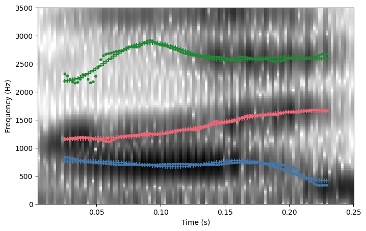
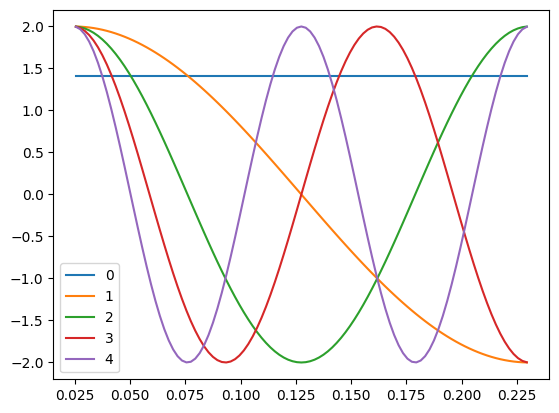
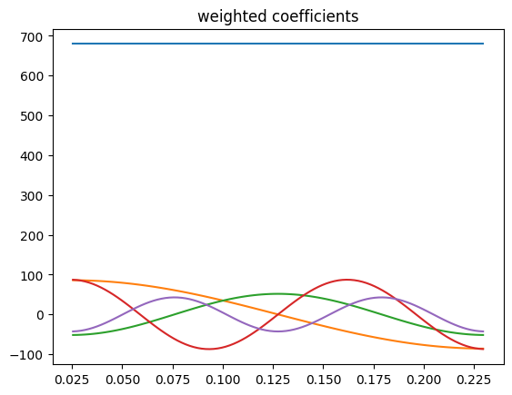
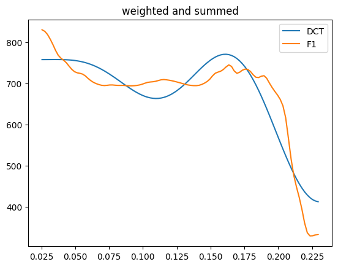
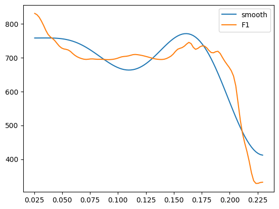
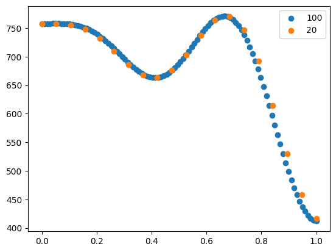
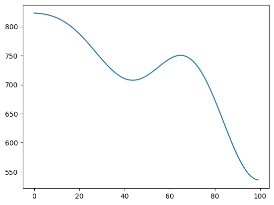
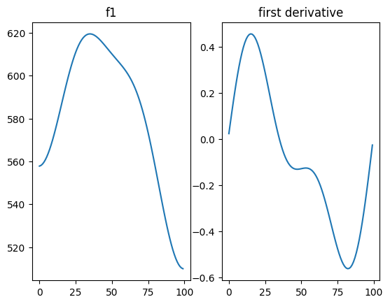

import polars as pl
import matplotlib.pyplot as plt
from scipy.fft import dct, idct
import numpy as np
from fasttrackpy import process_corpus
from pathlib import PathWorking with the smoothing parameters
FastTrackPy smooths formant trajectories using a form of Discrete Cosine Transform. Here’s how you can convert the DCT parameters back into formant track smooths after, e.g. averaging them.
corpus_path = Path("..","assets", "corpus")
measurements = process_corpus(corpus_path)100%|██████████| 65/65 [00:01<00:00, 45.21it/s]
100%|██████████| 273/273 [00:01<00:00, 209.07it/s]Let’s just look at /ay/ from these speakers.
ays = [track for track in measurements if track.label == "AY1"]
ays[0].winner.spectrogram()
The Discrete Cosine Transform
The smoothed formants are a 5th order discrete cosine transform. The DCT parameters are estimated via regression, using the following basis.
time = ays[0].winner.time_domain
N = time.size
order = 5
full_basis = dct(
np.eye(N),
orthogonalize=True,
norm = "backward"
)
basis = full_basis[:,:order]
plt.plot(time, basis)
plt.legend(range(5))
plt.show()
DCT coefficients define how to weight and sum this bank of cosine functions to match the input signal.
# the dct coefs for f1
f1_params = ays[0].winner.parameters[0,:]
# the formant track
f1 = ays[0].winner.formants[0,:]
plt.plot(time, basis * f1_params)
plt.title("weighted coefficients")
plt.show()
plt.plot(time, basis @ f1_params)
plt.plot(time, f1)
plt.title("weighted and summed")
plt.legend(["DCT", "F1"])
plt.show()
It’s possible to estimate DCT coefficients directly with scipy.fft.dct, but because there is potential for missing data in some formant tracks, FastTrackPy instead estimates the DCT coefficients using regression.
def reg_fit(x, basis):
params = np.linalg.inv(basis.T @ basis) @ (basis.T @ x)
return params
params = reg_fit(f1, basis)
print(params)[480.34662879 42.96063735 -25.85452683 43.6064711 -21.40185004]Inverting the DCT
It’s possible to invert the DCT parameters with scipy.fft.idct(), with orthognalize = True and norm = "forward". You also need to define how large you want the resulting smooth to be with n
f1_smooth = idct(
params,
n = time.size,
orthogonalize=True,
norm = "forward"
)
plt.plot(time, f1_smooth)
plt.plot(time, f1)
plt.legend(["smooth", "F1"])
plt.show()
Benefits of using the DCT parameters
“Down sampling”
It’s somewhat commmon to reduce the number of measurement points from a formant track to a common number (e.g. 20 evenly spaced points). We can achieve that by inverting the DCT parameters and using differently sized outputs.
smooth_100 = idct(params, n = 100, orthogonalize=True, norm = "forward")
smooth_20 = idct(params, n = 20, orthogonalize=True, norm = "forward")
plt.scatter(
np.arange(100)/99,
smooth_100
)
plt.scatter(
np.arange(20)/19,
smooth_20
)
plt.legend(["100", "20"])
plt.show()
Averaging
Instead of point-wise averaging over formant tracks, you can instead average over the DCT parameters, then invert the average. We can get a polars data frame of all of the parameters of /ays/ from these speakers with the .to_df() method,
all_ay_param = pl.concat([
ay.to_df(output = "param")
for ay in ays
])
all_ay_param.head()
shape: (5, 12)
| param | F1 | F2 | F3 | F4 | error | file_name | id | group | label | f0 | intensity |
|---|---|---|---|---|---|---|---|---|---|---|---|
| u32 | f64 | f64 | f64 | f64 | f64 | str | str | str | str | f64 | f64 |
| 0 | 480.346629 | 979.978985 | 1844.703629 | 2375.309121 | 0.007656 | "KY25A_1" | "0-0-8-1" | "KY25A" | "AY1" | 136.201147 | 39.094136 |
| 1 | 42.960637 | -130.970296 | -15.834371 | 2.077693 | 0.007656 | "KY25A_1" | "0-0-8-1" | "KY25A" | "AY1" | -20.717103 | 0.798274 |
| 2 | -25.854527 | 13.464163 | -67.155312 | -35.364346 | 0.007656 | "KY25A_1" | "0-0-8-1" | "KY25A" | "AY1" | 14.914196 | -1.437001 |
| 3 | 43.606471 | 4.179048 | -84.02887 | 18.797477 | 0.007656 | "KY25A_1" | "0-0-8-1" | "KY25A" | "AY1" | -7.710264 | -0.179294 |
| 4 | -21.40185 | -2.113124 | -42.265146 | -20.556672 | 0.007656 | "KY25A_1" | "0-0-8-1" | "KY25A" | "AY1" | 2.933718 | 0.229368 |
To get the the average of each parameter for each speaker, we need to group the dataframe by the param, file_name and group columns, then aggregate them.
ay_param_means = (all_ay_param
.group_by(
["param", "file_name", "group", ],
maintain_order = True)
.agg(
pl.col("F1").mean()
)
)
ay_param_means.head()
shape: (5, 4)
| param | file_name | group | F1 |
|---|---|---|---|
| u32 | str | str | f64 |
| 0 | "KY25A_1" | "KY25A" | 509.365702 |
| 1 | "KY25A_1" | "KY25A" | 44.871801 |
| 2 | "KY25A_1" | "KY25A" | -8.806545 |
| 3 | "KY25A_1" | "KY25A" | 27.038638 |
| 4 | "KY25A_1" | "KY25A" | -11.635248 |
Here’s the fitted F1 for the first speaker.
speaker_params = ay_param_means["F1"][0:5]
speaker_fit = idct(
speaker_params,
n = 100,
orthogonalize=True,
norm="forward"
)
plt.plot(speaker_fit)
plt.show()
The code below for getting fitted F1 tracks for each speaker is a bit detailed with respect to how polars dataframes work, but the process could be replicated in whatever way a user feels comfortable.
ay_fits = (
ay_param_means
.group_by(["file_name", "group"])
.agg(pl.col("F1"))
.with_columns(
f1_fit =pl.col("F1")
.map_elements(
lambda x: idct(x, n = 100, orthogonalize=True, norm = "forward").tolist(),
return_dtype=pl.List(pl.Float64)
),
time = pl.lit(np.linspace(0,1,100).tolist())
)
.explode(["f1_fit", "time"])
)ay_fits.plot.point(
"time",
"f1_fit",
color = "group"
)Getting derivatives
If we wanted to get the first derivative (or the rate of change) of the formant track smooths, this can also be calculated (code modified from here.)
from scipy.fft import idst
def first_deriv(coefs, size = 100):
hatu = coefs.copy()
for i in range(hatu.size):
hatu[i]=-(i)*hatu[i]
hatu[:-1]=hatu[1:]
hatu[-1]=0
dotu=idst(hatu, n = size, type=2)
return dotuspeaker_fit = (
ay_fits
.filter(pl.col("group").str.contains("group"))
)
speaker_params = (
ay_param_means
.filter(pl.col("group").str.contains("group"))
.select("F1")
)
speaker_rate = first_deriv(speaker_params["F1"].to_numpy(), size = 100)fig, axes = plt.subplots(nrows= 1, ncols=2)
axes[0].plot(speaker_fit["f1_fit"])
axes[0].set_title("f1")
axes[1].plot(speaker_rate)
axes[1].set_title("first derivative")
plt.show()